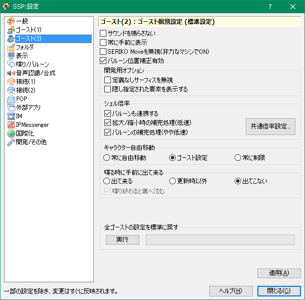

設定：ゴースト(2)
画像左側のリストをクリックで、それぞれのダイアログのページに対応する解説のページへ移動します。

このページでは右クリックメニューの「設定」サブメニューにある項目「本体設定」で開くダイアログの、「ゴースト(2)」ページについて解説しています。
ゴーストごとの設定の標準設定となる設定です。
各項目の解説
- サウンドを鳴らさない
-
本体経由で制御されるサウンド機能をすべて停止し、一切のサウンドを鳴らしません。
ただし、ゴーストが自分で（本体に頼らずに）サウンドを再生する場合には関係しません。
- 常に手前に表示
-
喋っているかどうかにかかわらず、常にデスクトップの一番手前に表示するようにします。
- SERIKO Moveを無視
-
常時ゴーストが動いている（浮遊の表現等）機能を強制的にOFFにします。
ウィンドウの動きがかなりの負荷になっている場合等に有効にすると負荷を軽減することができます。
- バルーン位置補正有効
-
バルーンをドラッグして位置補正をするかどうかを設定します。
補正機能を動作させたくない場合は無効にしてください。
開発用オプション
この項目は開発用オプションがオンになっている場合のみ表示されます。
- 定義なしサーフィスを無視
-
キャラクターの表情として定義されていない、アニメーション用などの雑多な画像ファイルを無視します。通常OFFで問題ありません。
旧いゴーストでは特にONにすると問題が生じます。
- 隠し指定された要素を表示する
-
ネタバレ対策や、内部で使用するために、「ユーザーが操作できる形で表示しない」設定になっているものをすべて表示します。
ゴーストをリロードしないと反映されない場合があります。
デバッグ用途のみに使用することをおすすめします。
キャラクター自由移動
キャラクターをドラッグで自由な位置に移動できるようにするかどうかの設定です。
- 常に自由移動
- 常に自由に移動できるようにします。
- ゴースト設定
- ゴースト側の設定に任せます。
- 常に制限
- 画面下部に吸着させるようにします。
喋る時に手前に出て来る
喋る時に他のウィンドウの裏側に居る場合、一番手前に出て来るかどうかの設定です。
- 出て来る
- 出てくるようにします。
- 更新時以外
- 出てくるようにしますが、更新時のトークでは出てきません。
- 出てこない
- 出てこないようにします（というよりは、出てくるように「しない」）。
- 喋り終わると裏へ沈む
- チェックを入れると、喋り終わったあとに他のウィンドウの後ろへ沈みます。
全ゴーストの設定を標準に戻す
実行すると、全てのゴーストの個別の設定を、現在の本体設定のものに戻します
下部のボタン
- ヘルプ
-
本体設定ダイアログの、設定中のページのヘルプ（つまりこのページ）を開きます。
ダイアログ右上の「？」マークも同様です。
- 閉じる
-
本体設定ダイアログを閉じます。
ダイアログ右上の「×」マークも同様です。